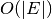

This documentation is for version 1.8.dev_20130102173740, which is not released yet.
2-OPT Local Ratio for Minimum Weighted Vertex Cover
Find an approximate minimum weighted vertex cover of a graph.
| Parameters : | G : NetworkX graph
weight : None or string, optional (default = None)
|
|---|---|
| Returns : | min_weighted_cover : set
|
Notes
Local-Ratio algorithm for computing an approximate vertex cover. Algorithm greedily reduces the costs over edges and iteratively builds a cover. Worst-case runtime is .
References
| [R110] | Bar-Yehuda, R., & Even, S. (1985). A local-ratio theorem for approximating the weighted vertex cover problem. Annals of Discrete Mathematics, 25, 27–46 http://www.cs.technion.ac.il/~reuven/PDF/vc_lr.pdf |